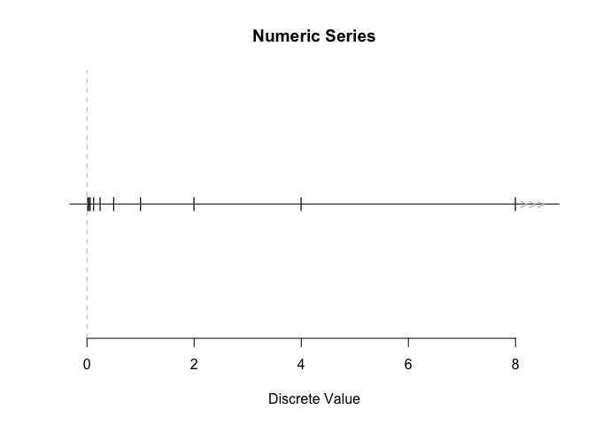

The discretes package provides a framework for representing numeric series that may be finite or infinite. Think 1:Inf, without storing all the values explicitly.
Series can be traversed, tested for membership, and queried for limit points (“sinks”). They can be manipulated to create new series, such as by transforming or combining.
The name “discretes” reflects the original use case of representing the support of discrete probability distributions like the Poisson or Geometric, which are often infinite but enumerable. The package is not limited to probability applications: it is designed as a general-purpose tool for working with enumerable numeric series.
Examples
library(discretes)While vectors in R must be finite, this is not a problem for discretes.
natural0()
#> Integer series of length Inf:
#> 0, 1, 2, 3, 4, 5, ...These objects are referred to as “numeric series”, and have class “discretes”. Their members are referred to as “discrete values”.
What’s the next discrete value after 10 in the series of integers? Or the previous five values from 1.3?
next_discrete(integers(), from = 10)
#> [1] 11
prev_discrete(integers(), from = 1.3, n = 5)
#> [1] 1 0 -1 -2 -3Test whether values are discrete values in a series.
has_discretes(natural1(), c(0, 1))
#> [1] FALSE TRUEPerform arithmetic operations on series.
1 / 2^integers()
#> Reciprocal series of length Inf:
#> Loading required namespace: testthat
#> ..., 0.25, 0.5, 1, 2, 4, 8, ...A new series is created after a base series gets modified. See the Creating numeric series vignette (vignette("creating-numeric-series", package = "discretes")) for what’s allowed (e.g. monotonic transformations) and how to use dsct_transform() for custom transformations.
Sinks
That last series above, 1 / 2^integers(), has a sink1 at 0 (approached from the right) and a sink at infinity, best seen by plotting:

Notice that there are infinitely many discrete values close to 0.
num_discretes(x, from = 0, to = 1)
#> [1] InfThere is no such thing as a “next” value when looking left of the sink.
next_discrete(x, from = -1)
#> numeric(0)You can ask whether a sink exists directly.
has_sink_in(x, from = 0, to = 1)
#> [1] TRUE
has_sink_at(x, 0, dir = "right")
#> [1] TRUEVignettes
-
Creating numeric series — Base series, arithmetic, and custom manipulations.
vignette("creating-numeric-series", package = "discretes") -
Querying a numeric series — Traversing with
next_discrete/prev_discrete, membership withhas_discretes, and extracting values withget_discretes_at()/get_discretes_in().vignette("querying-numeric-series", package = "discretes") -
Tolerance — How
tolis used in membership and traversal.vignette("tolerance", package = "discretes") -
Signed zero — Behaviour of +0 and -0 in numeric series.
vignette("signed_zero", package = "discretes")
Limitations
The series supported by the package include arithmetic series like integers, finite series from a numeric vector, and series created from them (see the Creating numeric series vignette). Specialized series like the Fibonacci numbers are not explicitly supported. Dense countable sets like the rational numbers are also not supported because they do not have a well-defined notion of local successor/predecessor.
Code of Conduct
Please note that the discretes project is released with a Contributor Code of Conduct. By contributing to this project, you agree to abide by its terms.
Similar Packages
- ‘Zseq’ provides access to named integer sequences (e.g., Fibonacci numbers, prime numbers), but does not provide a general framework for constructing and transforming numeric series.
- ‘sets’ focuses on finite set operations and abstract set algebra, rather than structured numeric series.
- ‘set6’ supported infinite sets via object-oriented abstractions, but is no longer available on CRAN.
- ‘peruse’ provides tools for iterating general sequences, but does not focus on algebraic manipulation or structured numeric series.
Acknowledgements
Development of this package would not have been possible without the funding and support of the European Space Agency, BGC Engineering Inc., and the Politecnico di Milano. The need for this package arose from work on the probaverse project, which aims to provide tools for probabilistic modeling and inference in R.